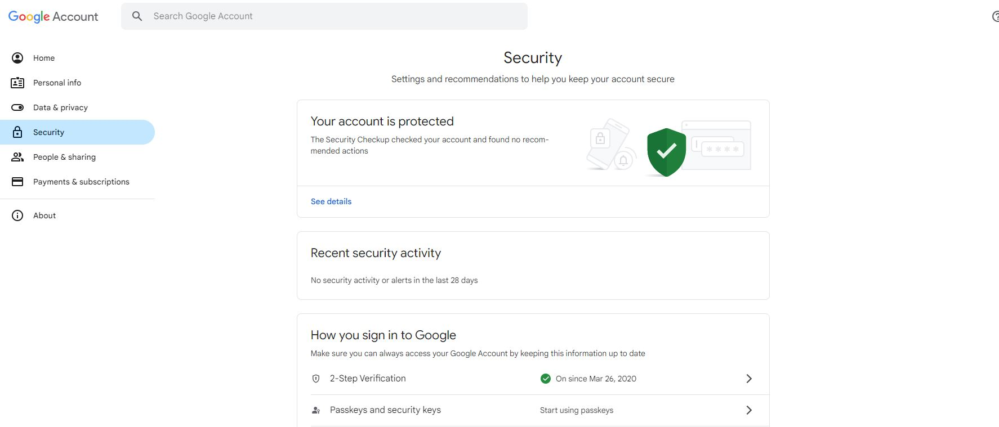
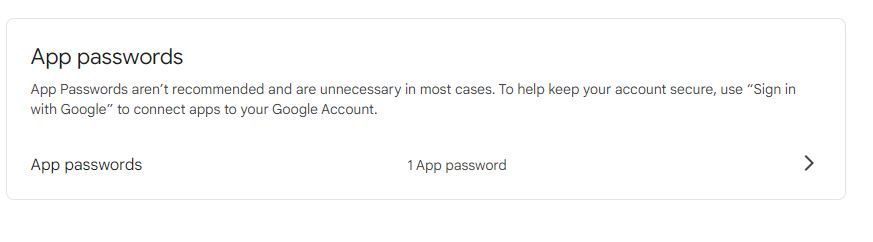
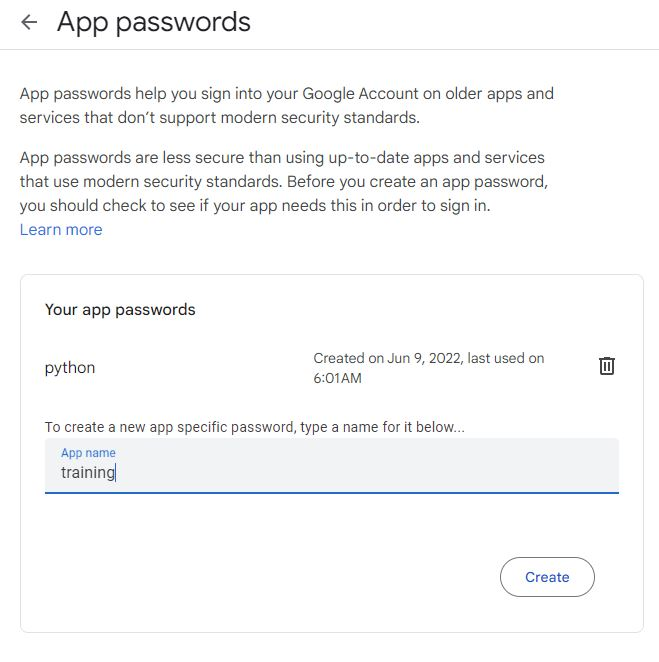

from email.mime.application import MIMEApplication
from email.mime.multipart import MIMEMultipart
from email.mime.text import MIMEText
import configparser
import smtplib
from os.path import basename7 Send Report
7.1 Introduction
After generating your well-designed reports, the next crucial step is sharing them with stakeholders. I use Python, along with Gmail, to automate the process of sending updated reports, ensuring timely delivery and minimizing manual effort. This allows for a smooth, consistent distribution of reports, saving time and reducing errors.
7.2 Gmail App Password
Google provides a secure way to configure applications with its products by allowing developers to generate app passwords. These passwords are specifically designed for use in applications, offering a secure and streamlined way to integrate with Google services, such as Gmail, without using your primary account password. This enhances security and simplifies authentication for app developers. Below are steps
Enable 2-Step Verification:
Go to your Google Account.
On the left pane click on Security.
Generate an App Password:
Under How you sign to Google, expand 2-Step Verification
Google may need you to provide a password to verify it’s you
Enable 2-Step Verification

2-Step Verification Expand App passwords section (Bottom of the page) by clicking on that arrow

Click on that arrow Enter the name of the app; any name (training, python)
Click Create

Enter the name of the app then click Create
Use the App Password:
A 16-character app password will be displayed. Copy this password.
Use this app password in place of your regular Gmail password in the application you are configuring. In our case in Python.
Save Your App Password:
- Keep this password secure, as it grants access to your Google account from the application. You can generate multiple app passwords if needed.
7.3 Sending Updates
Below is a Python script for sending reports via Gmail using an app password. This automates the process of sharing reports with stakeholders:
config = configparser.ConfigParser()
config.read('config.ini')
sender = config['email']['email_address']
app_password = config['email']['pass_word']
to_emails = [config['email']['recipient1'], config['email']['recipient2'],
config['email']['recipient3']]def send_mail(send_from: str, subject: str, text: str,
send_to: list, filess=None):
send_to = sender if not send_to else send_to
msg = MIMEMultipart()
msg['From'] = send_from
msg['To'] = ', '.join(send_to)
msg['Subject'] = subject
msg.attach(MIMEText(text))
for f in filess or []:
with open(f, "rb") as fil:
ext = f.split('.')[-1:]
attachedfile = MIMEApplication(fil.read(), _subtype=ext)
attachedfile.add_header(
'content-disposition', 'attachment', filename=basename(f))
msg.attach(attachedfile)
try:
server = smtplib.SMTP_SSL('smtp.gmail.com', 465)
server.login(sender, app_password)
server.sendmail(send_from, send_to, msg.as_string())
print("Email sent successfully!")
except smtplib.SMTPException as e:
print(f"Failed to send email: {e}")
finally:
server.quit()You can write the body of the email in the script as below:
files_tosend = ["./data-import.qmd"]
send_mail(
send_from = sender,
subject = "Test Email",
text = "Dear Moses, \nThis is a test email.\n\r Kind regard,, \n Moses",
filess = files_tosend,
send_to = to_emails)Another option is to store the email body in a text file, allowing you to easily update the content without modifying the script. This approach keeps your workflow organized and ensures that any changes to the message can be made quickly and cleanly, maintaining a clear separation between code and content. It’s a more efficient and scalable way to handle message updates, especially when dealing with frequent changes or multiple stakeholders.
with open('message-body.txt') as f:
email_body = f.read()
send_mail(
send_from = sender,
subject = "Test Email",
text = email_body,
filess = files_tosend,
send_to = to_emails) 7.4 Track The Reports Sent
MySQL is the bedrock for working with relational databases. Create a database and a table where you will be tracking your progress reports. Working the MySQL involves the four steps below:
- Get your database connection details
from mysql.connector import MySQLConnection
import mysql.connector
from mysql.connector import Error
from datetime import date
config = configparser.ConfigParser()
config.read('config.ini')
host_name = config['mysql']['host']
db_user = config['mysql']['user']
db = config['mysql']['database']
pass_word = config['mysql']['password']- Create a database
from mysql.connector import MySQLConnection
import mysql.connector
from mysql.connector import Error
def create_db(dname):
try:
# Establish the connection
connection = mysql.connector.connect(
host=host_name, # e.g., 'localhost' or an IP address
user=db_user,
password=pass_word
)
if connection.is_connected():
# Create a cursor object
cursor = connection.cursor()
# SQL statement to create the database
sql_create_db = f"CREATE DATABASE IF NOT EXISTS {dname}"
# Execute the query
cursor.execute(sql_create_db)
print(f"Database '{dname}' created or already exists.")
# Commit the transaction
connection.commit()
except Error as e:
print(f"Error: {e}")
finally:
# Close the cursor and connection
if connection.is_connected():
cursor.close()
connection.close()
print("MySQL connection is closed.")
create_db('training')Database 'training' created or already exists.
MySQL connection is closed.- Create a table
from mysql.connector import MySQLConnection
import mysql.connector
from mysql.connector import Error
def create_table(table_name="reports_tracking"):
try:
# Establish the connection
connection = mysql.connector.connect(
host=host_name,
user=db_user,
password=pass_word,
database=db)
if connection.is_connected():
# Create a cursor object
cursor = connection.cursor()
# SQL statement to create the table with the provided table name
sql_create_table = f"""
CREATE TABLE IF NOT EXISTS {table_name} (
id INT AUTO_INCREMENT PRIMARY KEY,
entry_date TIMESTAMP DEFAULT CURRENT_TIMESTAMP,
study VARCHAR(20)
);
"""
# Execute the query
cursor.execute(sql_create_table)
print(f"Table '{table_name}' created or already exists.")
# Commit the transaction
connection.commit()
except Error as e:
print(f"Error: {e}")
finally:
# Close the cursor and connection
if connection.is_connected():
cursor.close()
connection.close()
print("MySQL connection is closed.")
create_table()Table 'reports_tracking' created or already exists.
MySQL connection is closed.- Insert data into the table
from mysql.connector import MySQLConnection
import mysql.connector
from mysql.connector import Error
from datetime import date
def insert_data(study):
c_date = date.today()
try:
# Establish the connection
connection = mysql.connector.connect(
host=host_name, # e.g., 'localhost' or an IP address
user=db_user,
password=pass_word,
database=db)
if connection.is_connected():
print("Connected to MySQL database")
# Create a cursor object
cursor = connection.cursor()
# SQL INSERT statement
sql_insert_query = """INSERT INTO reports_tracking (entry_date, study)
VALUES (%s, %s)"""
# Values to insert
values_to_insert = (c_date, study)
# Execute the query
cursor.execute(sql_insert_query, values_to_insert)
# Commit the transaction
connection.commit()
print("Data inserted successfully")
except Error as e:
print(f"Error: {e}")
finally:
# Close the cursor and connection
if connection.is_connected():
cursor.close()
connection.close()
# Call the function to insert data
insert_data("Training")Connected to MySQL database
Data inserted successfullyTo avoid sending reports multiple times in a day, you can leverage the MySQL databases. First, fetch the data from the MySQL server and check if the report has been updated. If it hasn’t been sent that day, proceed to send it. We will update our send_mail function to ensure we track our progress reports.
from mysql.connector import MySQLConnection
import mysql.connector
from mysql.connector import Error
from datetime import date
def fetch_data():
try:
# Establish the connection
connection = mysql.connector.connect(
host=host_name, # e.g., 'localhost' or an IP address
user=db_user,
password=pass_word,
database=db)
if connection.is_connected():
# Create a cursor object
cursor = connection.cursor()
# ---- Pull the entry_date from the database
cursor.execute("SELECT entry_date FROM reports_tracking")
reportcentries = cursor.fetchall()
entries = [j.date() for i in reportcentries for j in i]
return entries
# Commit the transaction
connection.commit()
print("Data inserted successfully")
except Error as e:
print(f"Error: {e}")
finally:
# Close the cursor and connection
if connection.is_connected():
cursor.close()
connection.close()Update the send_mail function
def send_mail(send_from: str, subject: str, text: str,
send_to: list, filess=None):
send_to = sender if not send_to else send_to
msg = MIMEMultipart()
msg['From'] = send_from
msg['To'] = ', '.join(send_to)
msg['Subject'] = subject
msg.attach(MIMEText(text))
for f in filess or []:
with open(f, "rb") as fil:
ext = f.split('.')[-1:]
attachedfile = MIMEApplication(fil.read(), _subtype=ext)
attachedfile.add_header(
'content-disposition', 'attachment', filename=basename(f))
msg.attach(attachedfile)
try:
server = smtplib.SMTP_SSL('smtp.gmail.com', 465)
server.login(sender, app_password)
server.sendmail(send_from, send_to, msg.as_string())
insert_data("Training")
print("Email sent successfully!")
except smtplib.SMTPException as e:
print(f"Failed to send email: {e}")
finally:
server.quit()Send updates if not sent
with open('message-body.txt') as f:
email_body = f.read()
entries = fetch_data()
date_today = date.today()
if date_today not in entries:
send_mail(
send_from = sender,
subject = "Test Email",
text = email_body,
filess = files_tosend,
send_to = to_emails)
else:
print("You have sent the updates today")You have sent the updates today7.5 Summary
Once reports are generated, the next step is ensuring timely distribution to stakeholders. Automating this process with Python and Gmail enhances efficiency by reducing manual effort. By using a Gmail app password, which offers a secure way to integrate Gmail into applications without compromising your main account password, you ensure smooth, secure, and reliable email distribution.
The script provided sends reports as email attachments. It reads the sender’s credentials and recipients’ information from a configuration file (config.ini). The function send_mail handles the email composition and attachments, sending them securely via Gmail’s SMTP server. In the event of failure, the script uses a try-except block to catch errors and ensures the server connection is closed.
An additional recommendation is to store the email body in a separate text file for easier management, especially when frequently updating the content for various stakeholders. This keeps the script clean and maintainable.
We finalized the script to ensure updates are sent only if they haven’t been previously sent.